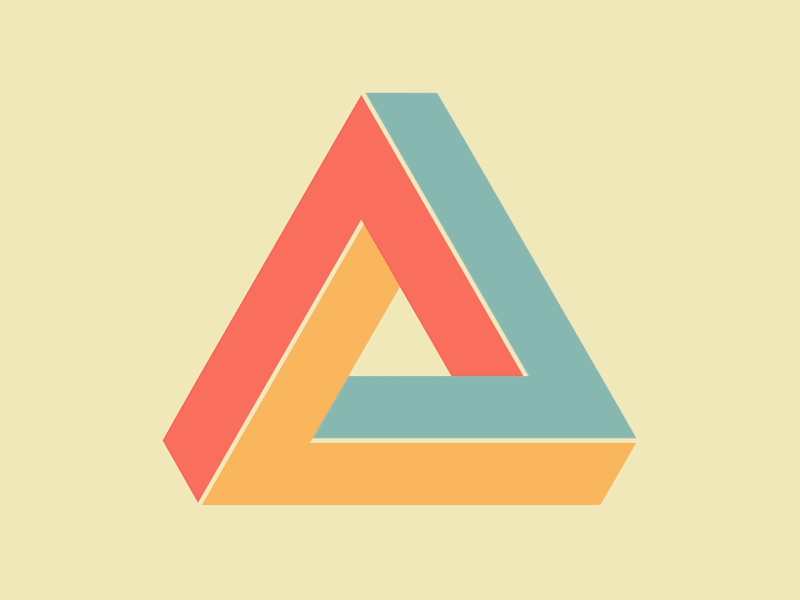

Imaging & Videochevron_right
Renderingchevron_right
Algovischevron_right
Computer Graphicschevron_right
HCIchevron_right
I am a fifth-year Computer Engineering student at Universidad Nacional de Colombia with a passion for software development. I have always been interested in web and mobile application development. Becoming ideas into real projects. I am constantly learning, improving, and practicing because this is an area that always evolves.
When I am working on a project, I always try to care about every single aspect and detail. From planning a workflow, designing an attractive UI to develop a software architecture keeping in mind software engineering good practices and trying to design a robust system.
At the moment I haven't had the opportunity to contribure in a open source project or a research project
The Penrose Triangle is an impossible figure (or impossible object or undecidable figure): it depicts an object which could not possibly exist. It is impossible for the Impossible Triangle to exist because in order for it to exist rules of Euclidean geometry would have to be violated. For example, the bottom bar of the tribar is represented as being spatially located to both the front of, and, at the same time, the back of the topmost point of the tribar.
The Impossible Triangle (also known as the Penrose Triangle or the Impossible Tribar) was first created by Oscar Reutersvärd (1915 - 2002), a Swedish graphic artist known as the ‘father of the impossible figure’. It is anecdotally, but widely reported that he created it in 1934, aged 18 while doodling as a student in his Latin class. The illusion was independently discovered later and popularised by Lionel Sharples Penrose (1898 -1972), a British psychiatrist, geneticist, and mathematician, and his son Sir Roger Penrose (1931 -), a British mathematician, physicist and philosopher of science. Penrose and Penrose published the illusion in the British Journal of Psychology in 1958.
Mathematicians have studied the mathematical and computational properties of impossible figures to try and develop formulas and algorithms for modelling impossible objects, for use in such things as computer vision. Cognitive scientists have been interested in the processes involved in continuing to see impossible figures as possible even when we know them to be impossible. Why, for instance, do we not see the Impossible Triangle just as some lines on a page once we realise that it can’t exist in three dimensional space? In answering this question, debates about modularity and cognitive penetration are of central importance. To explain: on the hypothesis that the mind is modular, a mental module is a kind of semi-independent department of the mind which deals with particular types of inputs, and gives particular types of outputs, and whose inner workings are not accessible to the conscious awareness of the person – all one can get access to are the relevant outputs. So, in the case of impossible figures, a standard way of explaining why experience of the impossible figure persists even though one knows that one is experiencing an impossibility is that the module, or modules, which constitute the visual system are ‘cognitively impenetrable’ to some degree – i.e. their inner workings and outputs cannot be influenced by conscious awareness
